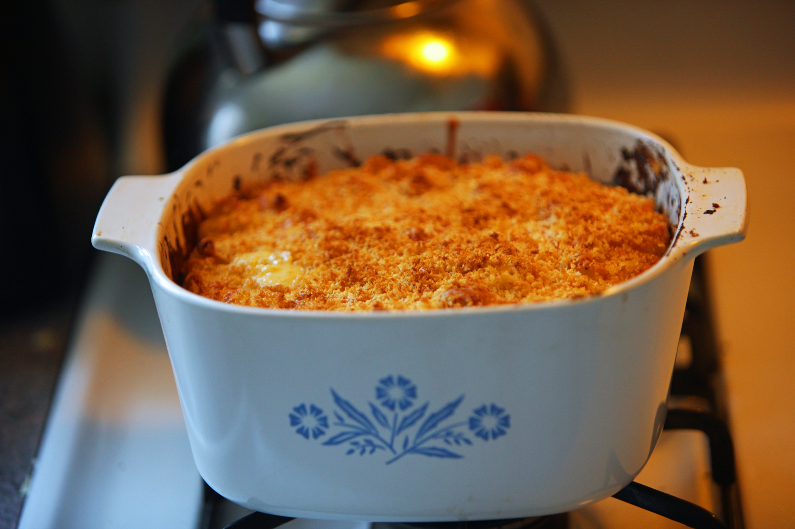

Jackstraw Tuna Casserole

Description
A simple but flavorful casserole, this is sure to be a hit when you don't have a lot of time to spend in the kitchen.
Shoestring potatoes provide a nice crunch when it is fresh from the oven. It's like a snack casserole.
Ingredients
- 4 oz can shoestring potatoes
- 1 11oz can cream of chicken soup
- 1 6oz can tuna, drained
- 6oz evaporated milk
Directions
- Reserve about 1 cup of shoestring potatoes and set aside.
- Combine the rest of the ingredients in casserole dish and mix well
- Sprinkle remaining shoestring potatoes on the top
- Bake, uncovered at 375 degrees Fahrenheit for about 25-30 mins